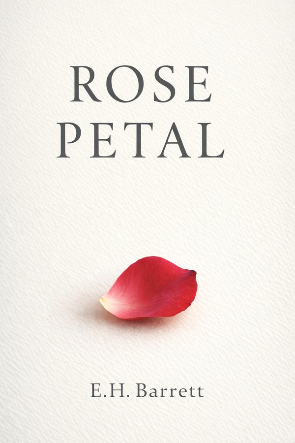

A novella that already exists. A game that doesn't yet.
Books and games by Excel Barrett, made in the open and published here as they become real.
Publishing

"I have always believed that most of a man's life is decided by the things he convinces himself are practical."
A man who built a whole life out of keeping his distance takes one train ride that will not let him keep it. Published February 2026.
Games
A hooded runner carries a heart shard through a world that has lost its colour. Every tap lands on the beat. The grey stays ahead of him, and the colour comes back behind.
It isn't finished, so there's nothing to buy and no date to give. This page will say the day it can be played.
About
StillW_ters is where the work goes when it's real.
Excel Barrett spent years in animation. He writes under E.H. Barrett and makes games under StillW_ters.
Everything here is either finished and available, or plainly marked as unfinished. Nothing is announced before it exists, and nothing on this page is a promise.